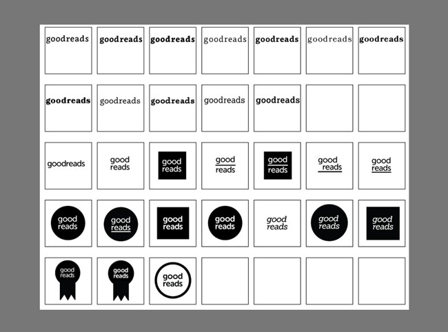
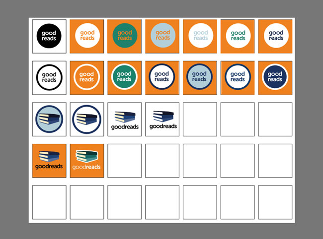
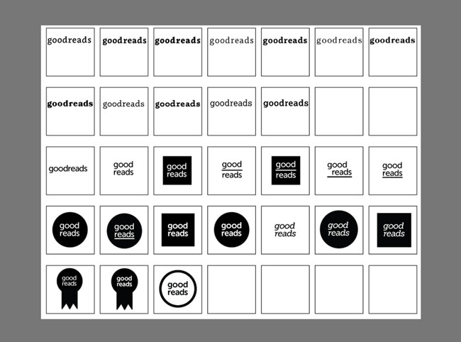
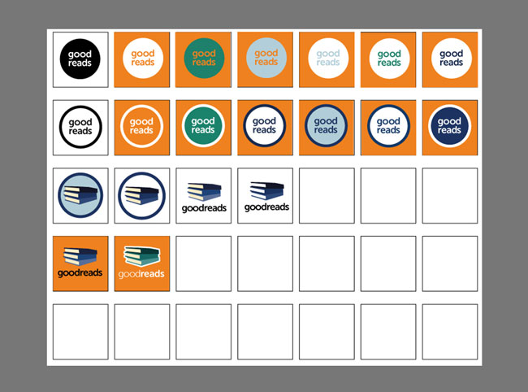
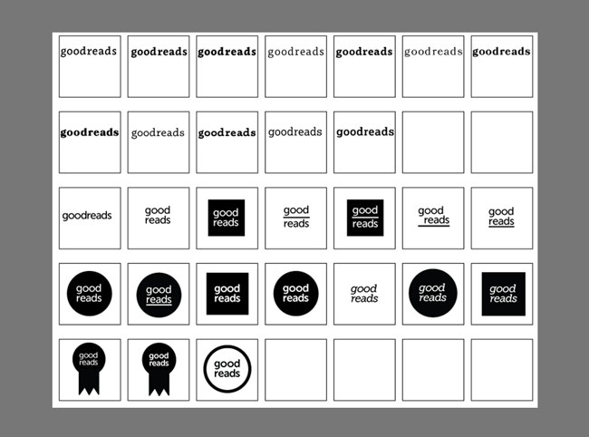
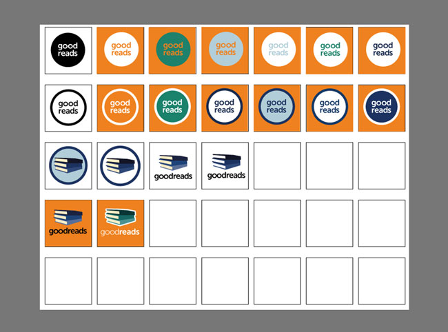

View my research here.
I designed this logo as part of a redesign project while I was a student at The Iron Yard. I wanted the logo to be clean and modern and feel like it was the logo for an app.
Research and Illustrator.
Before I began redesigning, I did a SWOT analysis, competitor analysis, brand analysis, and interviewed people about GoodReads. From there, I made a wordlist and decided the concept I wanted to go with was a modern app. From here, I hopped into my sketchbook and began thinking and iterating on ideas. I took them into Illustrator and iterated more until I arrived at this logo.
A challenge I faced with this project was creative block. My idea that ended up being worked into the final version came to me after weeks of putting this project away. The problem I solved was creating a new logo that kept the spirit of GoodReads, but updated it to fit my concept.

